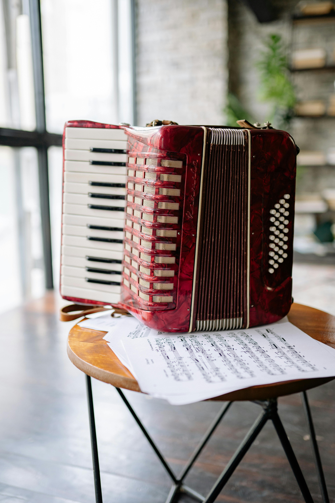
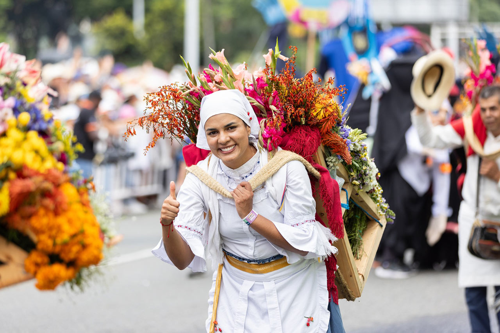
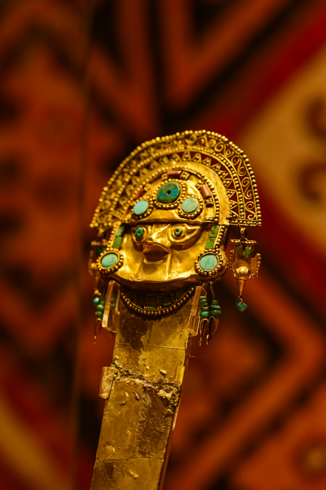
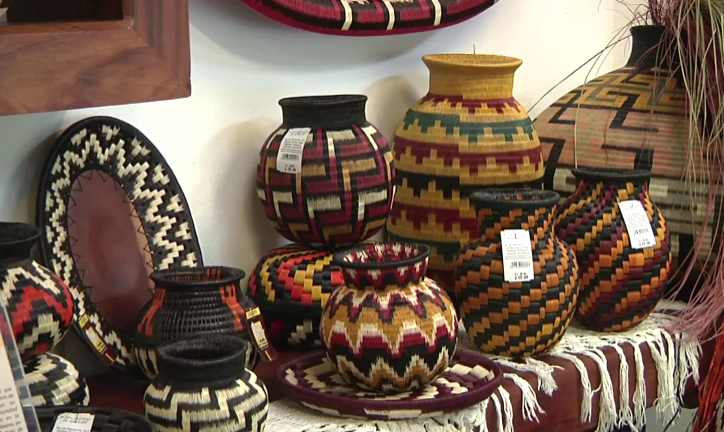
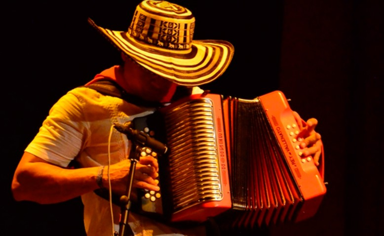
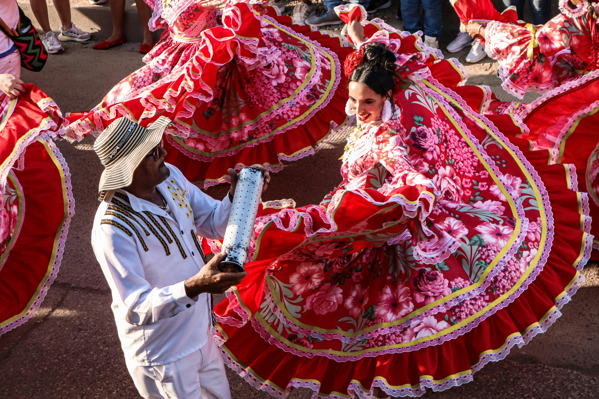
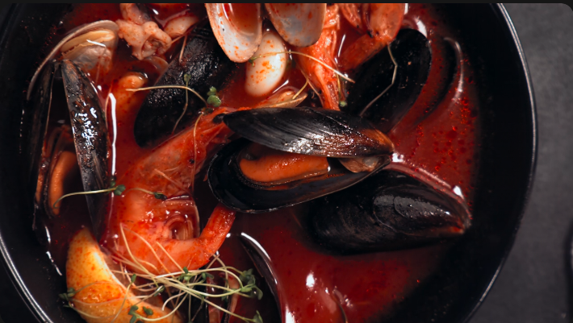
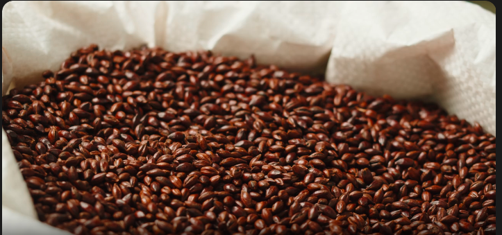

Tierra de vida
Desde las cumbres nevadas de los andes hasta las playas del caribe y el pacifico. Colombia es color, sabor y espiritu
Desde las cumbres nevadas de los andes hasta las playas del caribe y el pacifico. Colombia es color, sabor y espiritu
Lugares que enamoran
Murallas coloniales, mar Caribe y magia eterna
Biodiversidad sin igual
Identidad y Tradicion
Colombia es un mosaico de etnias, ritmos y colores. Su riqueza cultural nace de la fusión de raíces indígenas, africanas y europeas, que dan vida a expresiones únicas en el mundo.

Música · Caribe colombiano
Costa Caribe · Patrimonio UNESCO 2015
Vallenato y Cumbia
Nacido en el Caribe colombiano, el vallenato fusiona tradiciones africanas, indígenas y europeas. El acordeón, la caja y la guacharaca son su triada sagrada. La cumbia, danza de tambores y velas encendidas, es el alma del litoral. Declarado Patrimonio Inmaterial de la Humanidad por la UNESCO en 2015.

Tradición · Agosto
Medellín · Antioquia · desde 1957
Feria de las Flores
Cada agosto Medellín florece. Los silleteros de Santa Elena descienden cargando silletas con miles de flores elaboradas artesanalmente. Desde 1957, el Desfile de Silleteros es el corazón de esta celebración, reuniendo más de 500 portadores con sus creaciones en 80+ variedades de flores.

Orfebrería · Precolombina
Museo del Oro · Bogotá · 55.000 piezas
Artesanías Precolombinas
Muisca, Quimbaya, Zenú y Calima dominaron el oro como ninguna otra cultura. Sus piezas en tumbaga —aleación de oro y cobre— representaban dioses, chamanes y cosmos. La icónica Balsa Muisca simboliza el ritual de El Dorado. El Museo del Oro de Bogotá alberga la mayor colección de orfebrería prehispánica del mundo.



Sabores Autenticos

Plato representativo de la costa Caribe colombiana que combina sabores del mar con el dulzor del coco.

Reconocido mundialmente por su calidad, el café ha dado identidad al Eje Cafetero, cuyo paisaje es patrimonio cultural de la UNESCO.